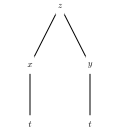
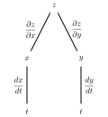
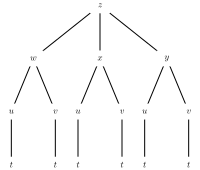

What is the Chain Rule and how do we use it to find a derivative?
How can we use a tree diagram to guide us in applying the Chain Rule?
In single-variable calculus, we encountered situations in which some quantity \(z\) depends on \(y\) and, in turn, \(y\) depends on \(x\text{.}\) A change in \(x\) produces a change in \(y\text{,}\) which consequently produces a change in \(z\text{.}\) Using the language of differentials that we saw in the previous section, these changes are naturally related by
In the case of a function \(f\) of two variables where \(z = f(x,y)\text{,}\) it might be that both \(x\) and \(y\) depend on another variable \(t\text{.}\) A change in \(t\) then produces changes in both \(x\) and \(y\text{,}\) which then cause \(z\) to change. In this section we will see how to find the change in \(z\) that is caused by a change in \(t\text{,}\) leading us to multivariable versions of the Chain Rule involving both regular and partial derivatives.
Preview Activity10.5.1.
Suppose you are driving around in the \(xy\)-plane in such a way that your position \(\vr(t)\) at time \(t\) is given by function
and note that the surface generated by \(T\) is shown on the right of Figure 10.5.1. Therefore, as time passes, your position \((x(t), y(t))\) changes, and, as your position changes, the temperature \(T(x,y)\) also changes.
The position function \(\vr\) provides a parameterization \(x = x(t)\) and \(y = y(t)\) of the position at time \(t\text{.}\) By substituting \(x(t)\) for \(x\) and \(y(t)\) for \(y\) in the formula for \(T\text{,}\) we can write \(T = T(x(t), y(t))\) as a function of \(t\text{.}\) Make these substitutions to write \(T\) as a function of \(t\) and then use the Chain Rule from single variable calculus to find \(\frac{dT}{dt}\text{.}\) (Do not do any algebra to simplify the derivative, either before taking the derivative, nor after.)
Now we want to understand how the result from part (a) can be obtained from \(T\) as a multivariable function. Recall from the previous section that small changes in \(x\) and \(y\) produce a change in \(T\) that is approximated by
\begin{equation*}
\Delta T \approx T_x\Delta x + T_y\Delta y.
\end{equation*}
The Chain Rule tells us about the instantaneous rate of change of \(T\text{,}\) and this can be found as
\begin{equation}
\lim_{\Delta t \to 0} \frac{\Delta T}{\Delta t} = \lim_{\Delta t \to 0} \frac{T_x \Delta x + T_y \Delta y}{\Delta t}.\tag{10.5.1}
\end{equation}
Use equation (10.5.1) to explain why the instantaneous rate of change of \(T\) that results from a change in \(t\) is
Using the original formulas for \(T\text{,}\)\(x\text{,}\) and \(y\) in the problem statement, calculate all of the derivatives in Equation (10.5.2) (with \(T_x\) and \(T_y\) in terms of \(x\) and \(y\text{,}\) and \(x'\) and \(y'\) in terms of \(t\)), and hence write the right-hand side of Equation (10.5.2) in terms of \(x\text{,}\)\(y\text{,}\) and \(t\text{.}\)
Compare the results of parts (a) and (c). Write a couple of sentences that identify specifically how each term in (c) relates to a corresponding terms in (a). This connection between parts (a) and (c) provides a multivariable version of the Chain Rule.
Subsection10.5.1The Chain Rule
As Preview Activity 10.3.1 suggests, the following version of the Chain Rule holds in general.
The Chain Rule.
Let \(z = f(x,y)\text{,}\) where \(f\) is a differentiable function of the independent variables \(x\) and \(y\text{,}\) and let \(x\) and \(y\) each be differentiable functions of an independent variable \(t\text{.}\) Then
It is important to note the differences among the derivatives in (10.5.3). Since \(z\) is a function of the two variables \(x\) and \(y\text{,}\) the derivatives in the Chain Rule for \(z\) with respect to \(x\) and \(y\) are partial derivatives. However, since \(x = x(t)\) and \(y = y(t)\) are functions of the single variable \(t\text{,}\) their derivatives are the standard derivatives of functions of one variable. When we compose \(z\) with \(x(t)\) and \(y(t)\text{,}\) we then have \(z\) as a function of the single variable \(t\text{,}\) making the derivative of \(z\) with respect to \(t\) a standard derivative from single variable calculus as well.
To understand why this Chain Rule works in general, suppose that some quantity \(z\) depends on \(x\) and \(y\) so that
which is the Chain Rule in this particular context, as expressed in Equation (10.5.3).
Activity10.5.2.
In the following questions, we apply the Chain Rule in several different contexts.
Suppose that we have a function \(z\) defined by \(z(x,y) = x^2+xy^3\text{.}\) In addition, suppose that \(x\) and \(y\) are restricted to points that move around the plane by following a circle of radius \(2\) centered at the origin that is parameterized by
Use the Chain Rule to find the resulting instantaneous rate of change \(\frac{dz}{dt}\text{.}\)
Substitute \(x(t)\) for \(x\) and \(y(t)\) for \(y\) in the rule for \(z\) to write \(z\) in terms of \(t\) and calculate \(\frac{dz}{dt}\) directly. Compare to the result of part (i.).
Suppose that the temperature on a metal plate is given by the function \(T\) with
where the temperature is measured in degrees Fahrenheit and \(x\) and \(y\) are each measured in feet.
Find \(T_x\) and \(T_y\text{.}\) What are the units on these partial derivatives?
Suppose an ant is walking along the \(x\)-axis at the rate of 2 feet per minute toward the origin. When the ant is at the point \((2,0)\text{,}\) what is the instantaneous rate of change in the temperature \(dT/dt\) that the ant experiences. Include units on your response.
Suppose instead that the ant walks along an ellipse with \(x = 6\cos(t)\) and \(y = 3\sin(t)\text{,}\) where \(t\) is measured in minutes. Find \(\frac{dT}{dt}\) at \(t = \pi/6\text{,}\)\(t=\pi/4\text{,}\) and \(t = \pi/3\text{.}\) What does this seem to tell you about the path along which the ant is walking?
Suppose that you are walking along a surface whose elevation is given by a function \(f\text{.}\) Furthermore, suppose that if you consider how your location corresponds to points in the \(xy\)-plane, you know that when you pass the point \((2,1)\text{,}\) your velocity vector is \(\vv=\langle -1,2\rangle\text{.}\) If some contours of \(f\) are as shown in Figure 10.5.2, estimate the rate of change \(df/dt\) when you pass through \((2,1)\text{.}\)
Figure10.5.2.Some contours of \(f\text{.}\)
Subsection10.5.2Tree Diagrams
Up to this point, we have applied the Chain Rule to situations where we have a function \(z\) of variables \(x\) and \(y\text{,}\) with both \(x\) and \(y\) depending on another single quantity \(t\text{.}\) We may apply the Chain Rule, however, when \(x\) and \(y\) each depend on more than one quantity, or when \(z\) is a function of more than two variables. It can be challenging to keep track of all the dependencies among the variables, and thus a tree diagram can be a useful tool to organize our work. For example, suppose that \(z\) depends on \(x\) and \(y\text{,}\) and \(x\) and \(y\) both depend on \(t\text{.}\) We may represent these relationships using the tree diagram shown at left Figure 10.5.3. We place the dependent variable at the top of the tree and connect it to the variables on which it depends one level below. We then connect each of those variables to the variable on which each depends.


Figure10.5.3.A tree diagram illustrating dependencies.
To represent the Chain Rule, we label every edge of the diagram with the appropriate derivative or partial derivative, as seen at right in Figure 10.5.3. To calculate an overall derivative according to the Chain Rule, we construct the product of the derivatives along all paths connecting the variables and then add all of these products. For example, the diagram at right in Figure 10.5.3 illustrates the Chain Rule
Figure 10.5.4 shows the tree diagram we construct when (a) \(z\) depends on \(w\text{,}\)\(x\text{,}\) and \(y\text{,}\) (b) \(w\text{,}\)\(x\text{,}\) and \(y\) each depend on \(u\) and \(v\text{,}\) and (c) \(u\) and \(v\) depend on \(t\text{.}\)

Figure10.5.4.Three levels of dependencies
Label the edges with the appropriate derivatives.
Use the Chain Rule to write \(\frac{dz}{dt}\text{.}\)
Construct a tree diagram representing the dependencies of \(z\) on \(x\) and \(y\) and \(x\) and \(y\) on \(r\) and \(\theta\text{.}\)
Use the tree diagram to find \(\frac{\partial z}{\partial r}\text{.}\)
Now suppose that \(r = 3\) and \(\theta=\pi/6\text{.}\) Find the values of \(x\) and \(y\) that correspond to these given values of \(r\) and \(\theta\text{,}\) and then use the Chain Rule to find the value of the partial derivative \(\frac{\partial z}{\partial \theta}|_{(3,\frac{\pi}{6})}\text{.}\)
Subsection10.5.3Summary
The Chain Rule is a tool for differentiating a composite for functions. In its simplest form, it says that if \(f(x,y)\) is a function of two variables and \(x(t)\) and \(y(t)\) depend on \(t\text{,}\) then
A tree diagram can be used to represent the dependence of variables on other variables. By following the links in the tree diagram, we can form chains of partial derivatives or derivatives that can be combined to give a desired partial derivative.
Exercises10.5.4Exercises
1.
Use the chain rule to find \(\frac{dz}{dt}\text{,}\) where
\begin{equation*}
z = x^2 y + x y^2,\quad x = 4 - t^7,\quad y = -4 - t^5
\end{equation*}
First the pieces:
\(\frac{\partial z}{\partial x} =\)
\(\frac{\partial z}{\partial y} =\)
\(\frac{dx}{dt} =\)
\(\frac{dy}{dt} =\)
End result (in terms of just \(t\)):
\(\frac{dz}{dt} =\)
2.
Use the chain rule to find \(\frac{\partial z}{\partial s}\) and \(\frac{\partial z}{\partial t}\text{,}\) where
\begin{equation*}
z = e^{xy}\tan y, x = 5 s + 1 t, y = \frac{2 s}{6 t}
\end{equation*}
Suppose \(\displaystyle w = \frac{x}{y} + \frac{y}{z}\text{,}\) where
\(x = e^{t},\ y = 2 + \sin \left( 5t \right)\text{,}\) and \(z = 2 + \cos \left( 5t \right)\text{.}\)
A) Use the chain rule to find \(\frac{dw}{dt}\) as a function of x, y, z, and t. Do not rewrite x, y, and z in terms of t, and do not rewrite \(e^{t}\) as x.
\(\frac{dw}{dt}\) =
Note: You may want to use exp() for the exponential function. Your answer should be an expression in x, y, z, and t; e.g. “3x - 4y”
B) Use part A to evaluate \(\frac{dw}{dt}\) when \(t
= 0\text{.}\)
4.
If \(z = \left(x+y\right)e^{y}\) and \(x = u^{2}+v^{2}\) and \(y = u^{2}-v^{2}\text{,}\) find the following partial derivatives using the chain rule. Enter your answers as functions of \(u\) and \(v\text{.}\)
\(\displaystyle \frac{\partial z}{\partial u} =\)
\(\displaystyle \frac{\partial z}{\partial v} =\)
5.
If
\begin{equation*}
z = \sin\!\left(x^{2}+y^{2}\right),\qquad x = v\cos\!\left(u\right),\qquad y = v\sin\!\left(u\right),
\end{equation*}
find \(\partial z/\partial u\) and \(\partial z/\partial v\text{.}\) The variables are restricted to domains on which the functions are defined.
\(\partial z/\partial u =\)
\(\partial z/\partial v =\)
6.
Let \(z=g(u,v,w)\) and \(u(r,s,t),v(r,s,t),w(r,s,t)\text{.}\) How many terms are there in the expression for \(\partial z/\partial r\text{?}\)
The radius of a right circular cone is increasing at a rate of 4 inches per second and its height is decreasing at a rate of 2 inches per second. At what rate is the volume of the cone changing when the radius is 30 inches and the height is 10 inches?
cubic inches per second
9.
In a simple electric circuit, Ohm's law states that \(V = IR\text{,}\) where V is the voltage in volts, I is the current in amperes, and R is the resistance in ohms. Assume that, as the battery wears out, the voltage decreases at 0.03 volts per second and, as the resistor heats up, the resistance is increasing at 0.03 ohms per second. When the resistance is 400 ohms and the current is 0.04 amperes, at what rate is the current changing?
A. Use the chain rule to find \(\frac{\partial z}{\partial s}\) and \(\frac{\partial z}{\partial t}\) as functions of x, y, s and t.
\(\frac{\partial z}{\partial s} =\)
\(\frac{\partial z}{\partial t} =\)
B. Find the numerical values of \(\frac{\partial z}{\partial s}\) and \(\frac{\partial z}{\partial t}\) when \(\left( s , t \right) = \left( -3 , 3
\right)\text{.}\)
and then determine both \(\frac{\partial z}{\partial x}\bigm|_{(0, \frac{2\pi}{3})}\) and \(\frac{\partial z}{\partial y}\bigm|_{(0, \frac{2\pi}{3})}\text{.}\)
13.
Suppose that \(T = x^2 + y^2 - 2z\) where
\begin{align*}
x \amp = \rho\sin(\phi)\cos(\theta)\\
y \amp = \rho\sin(\phi)\sin(\theta)\\
z \amp = \rho\cos(\phi)
\end{align*}
Construct a tree diagram representing the dependencies among the variables.
Apply the chain rule to find the partial derivatives
where the temperature is measured in degrees Fahrenheit and \(x\) and \(y\) are each measured in feet. Now suppose that an ant is walking on the metal plate in such a way that it walks in a straight line from the point \((1,4)\) to the point \((5,6)\text{.}\)
Find parametric equations \((x(t),y(t))\) for the ant's coordinates as it walks the line from \((1,4)\) to \((5,6)\text{.}\)
What can you say about \(\frac{dx}{dt}\) and \(\frac{dy}{dt}\) for every value of \(t\text{?}\)
Determine the instantaneous rate of change in temperature with respect to \(t\) that the ant is experiencing at the moment it is halfway from \((1,4)\) to \((5,6)\text{,}\) using your parametric equations for \(x\) and \(y\text{.}\) Include units on your answer.
15.
There are several proposed formulas to approximate the surface area of the human body. One model 1 uses the formula
where \(A\) is the surface area in square meters, \(h\) is the height in centimeters, and \(w\) is the weight in kilograms.
Since a person's height \(h\) and weight \(w\) change over time, \(h\) and \(w\) are functions of time \(t\text{.}\) Let us think about what is happening to a child whose height is \(60\) centimeters and weight is \(9\) kilograms. Suppose, furthermore, that \(h\) is increasing at an instantaneous rate of 20 centimeters per year and \(w\) is increasing at an instantaneous rate of \(5\) kg per year.
Determine the instantaneous rate at which the child's surface area is changing at this point in time.
16.
Let \(z = f(x,y) = 50 - (x+1)^2 - (y+3)^2\) and \(z = h(x,y) = 24 - 2x - 6y\text{.}\)
Suppose a person is walking on the surface \(z = f(x,y)\) in such a way that she walks the curve which is the intersection of \(f\) and \(h\text{.}\)
Show that \(x(t) = 4 \cos(t)\) and \(y(t) = 4 \sin(t)\) is a parameterization of the “shadow” in the \(xy\)-plane of the curve that is the intersection of the graphs of \(f\) and \(h\text{.}\)
Use the parameterization from part (a) to find the instantaneous rate at which her height is changing with respect to time at the instant \(t = 2\pi/3\text{.}\)
17.
The voltage \(V\) (in volts) across a circuit is given by Ohm's Law: \(V = IR\text{,}\) where \(I\) is the current (in amps) in the circuit and \(R\) is the resistance (in ohms). Suppose we connect two resistors with resistances \(R_1\) and \(R_2\) in parallel as shown in Figure 10.5.5. The total resistance \(R\) in the circuit is then given by
Assume that the current, \(I\text{,}\) and the resistances, \(R_1\) and \(R_2\text{,}\) are changing over time, \(t\text{.}\) Use the Chain Rule to write a formula for \(\frac{dV}{dt}\text{.}\)
Suppose that, at some particular point in time, we measure the current to be 3 amps and that the current is increasing at \(\frac{1}{10}\) amps per second, while resistance \(R_1\) is 2 ohms and decreasing at the rate of 0.2 ohms per second and \(R_2\) is 1 ohm and increasing at the rate of \(0.5\) ohms per second. At what rate is the voltage changing at this point in time?
Figure10.5.5.Resistors in parallel.
DuBois D, DuBois DF. A formula to estimate the approximate surface area if height and weight be known. Arch Int Med 1916;17:863-71.